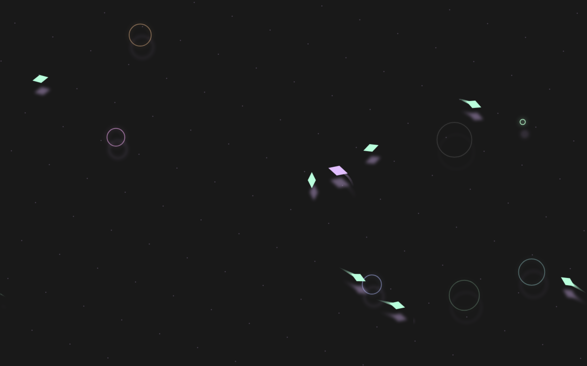
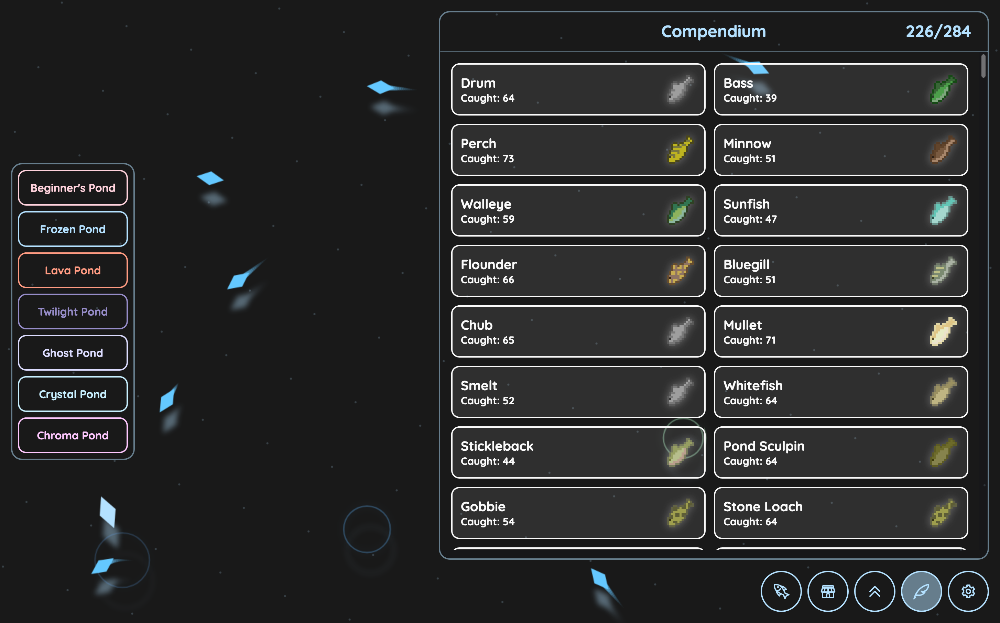
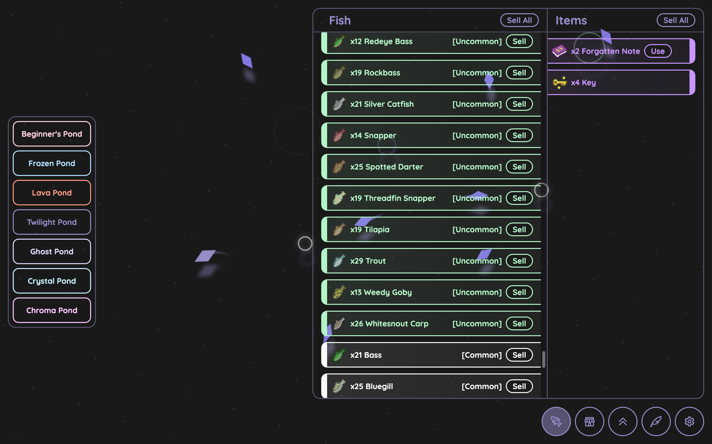
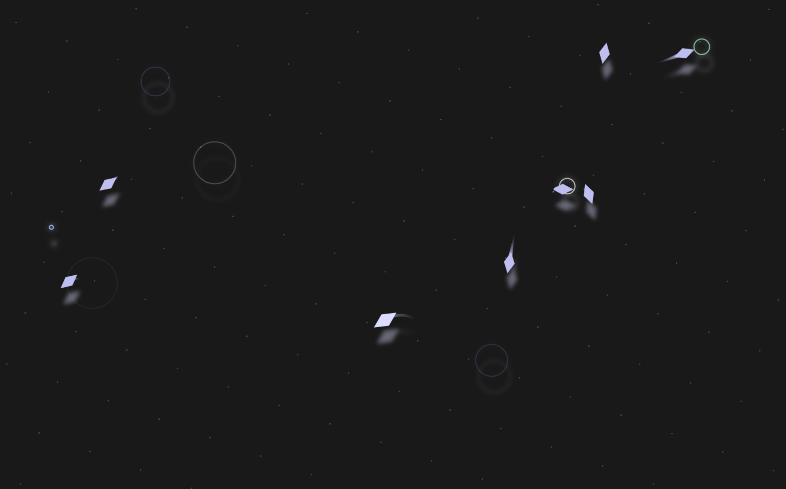

WebKoi is a browser-based fishing game, complete with pixel art, upgrades, ambient sounds, etc.

I wanted to try making my own browser-based game, while learning optimization techniques.
I made the entire project by hand including all assets, logic, etc. No external libraries were used.


This project went through several redesigns, as well as a complete rewrite. Most of the work went into the rendering engine.
It's available at webkoi.org, and is continuing to receive updates. There are hundreds of features to explore, and it's a personal favorite project.
